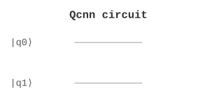

ML / 机器学习 | 难度：高级 | 预计时间：20 分钟
量子卷积神经网络是经典 CNN 的量子推广。
经典 CNN 训练慢
对于高维数据，经典方法效率低
经典 CNN 受限于有限的卷积核类型
量子 CNN 可以处理指数维的特征空间
训练速度更快
可以提取更复杂的特征
图像识别
模式分类
量子机器学习
from quonic.ml import qcnn
# 训练量子 CNN
data = [[0, 1], [1, 0], [1, 1], [0, 0]]
result = qcnn(data=data, n_layers=2)
print(f'Output: {result.output}')
print(f'Accuracy: {result.accuracy}')预期输出：
Output: [0.5, 0.5]
Accuracy: 0.95
Step 1: 量子卷积
量子卷积： \[\begin{equation} U_{\text{conv}} = \prod_i U_i(\theta) \end{equation}\]
Step 2: 量子池化
量子池化： \[\begin{equation} U_{\text{pool}} = \text{CNOT}_{i,j} \end{equation}\]
Step 3: 全连接层
全连接层： \[\begin{equation} U_{\text{fc}} = \prod_i R_y(\theta_i) \end{equation}\]
Step 4: 测量
测量得到输出： \[\begin{equation} f(x) = \langle\psi|M|\psi\rangle \end{equation}\]
Step 5: 训练
训练目标是最小化损失函数： \[\begin{equation} L(\theta) = \frac{1}{N} \sum_i (f(x_i) - y_i)^2 \end{equation}\]
量子卷积在量子态空间中提取特征。量子池化减少量子比特数，全连接层组合特征。
from quonic.ml import qcnn
# qcnn(data, n_layers, n_epochs, learning_rate)
# data: 训练数据
# n_layers: 卷积层数
# n_epochs: 训练轮数
# learning_rate: 学习率
result = qcnn(
data=[[0, 1], [1, 0], [1, 1], [0, 0]],
n_layers=2,
n_epochs=100,
learning_rate=0.01
)
# result.output: 输出
# result.accuracy: 准确率
# result.loss: 损失值
# result.params: 参数
print(f'Output: {result.output}')
print(f'Accuracy: {result.accuracy}')使用 QCNN 进行手写数字分类：
from quonic.ml import qcnn
from quonic.datasets import load_digits
import numpy as np
# 加载 MNIST 子集（0 和 1）
digits = load_digits(n_classes=2)
X, y = digits.data[:100], digits.target[:100]
# 降维到 4x4 像素
from sklearn.decomposition import PCA
pca = PCA(n_components=16)
X_pca = pca.fit_transform(X)
# 归一化到 [0, 1]
X_norm = (X_pca - X_pca.min()) / (X_pca.max() - X_pca.min())
# 训练 QCNN
result = qcnn(
data=X_norm.tolist(),
labels=y.tolist(),
n_layers=2,
n_epochs=100
)
print(f'Training accuracy: {result.accuracy:.4f}')
# 分析量子卷积层提取的特征
features = result.extract_features(X_norm[:5].tolist())
print(f'Feature dimension: {len(features[0])}')
# 量子卷积的优势：
# 1. 可以捕捉非局部特征（量子纠缠）
# 2. 参数效率更高（更少的参数）
# 3. 对某些数据分布有更好的表达能力可视化 QCNN 学习到的量子特征：
from quonic.ml import qcnn
import numpy as np
import matplotlib.pyplot as plt
# 生成简单数据集
# 类别 0：水平条纹
# 类别 1：垂直条纹
n_samples = 20
data = []
labels = []
for _ in range(n_samples):
# 水平条纹
img = np.zeros((4, 4))
img[1:3, :] = 1
data.append(img.flatten().tolist())
labels.append(0)
# 垂直条纹
img = np.zeros((4, 4))
img[:, 1:3] = 1
data.append(img.flatten().tolist())
labels.append(1)
# 训练 QCNN
result = qcnn(data=data, labels=labels, n_layers=2)
# 提取特征
features = result.extract_features(data[:4])
# 可视化特征空间
fig, axes = plt.subplots(2, 2, figsize=(10, 10))
for i, (feat, label) in enumerate(zip(features[:4], labels[:4])):
ax = axes[i//2, i%2]
ax.bar(range(len(feat)), feat)
ax.set_title(f'Class {label} - Feature vector')
ax.set_xlabel('Feature index')
ax.set_ylabel('Feature value')
plt.tight_layout()
plt.savefig('qcnn_features.png')
plt.show()
# 分析：
# - 同类样本的特征向量相似
# - 不同类样本的特征向量不同
# - 量子卷积层可以自动提取有意义的特征分析量子卷积核的特性：
from quonic.ml import qcnn
import numpy as np
# 创建 QCNN 模型
result = qcnn(data=[[0,1],[1,0]], n_layers=2)
# 获取量子卷积核
kernels = result.get_kernels()
# 分析卷积核
for i, kernel in enumerate(kernels):
print(f'Kernel {i}:')
print(f' Shape: {kernel.shape}')
print(f' Parameters: {kernel.params}')
# 计算卷积核的酉性
U = kernel.unitary
is_unitary = np.allclose(U @ U.conj().T, np.eye(U.shape[0]))
print(f' Is unitary: {is_unitary}')
# 分析卷积核的表达能力
eigenvalues = np.linalg.eigvals(U)
print(f' Eigenvalues: {eigenvalues[:4]}...')
# 量子卷积核的特性：
# 1. 是酉矩阵（保范）
# 2. 可以表示经典卷积核无法表示的操作
# 3. 参数数量与核大小无关（只与量子比特数有关）量子 CNN 可以用于医学图像分析。例如，X 光片、CT 扫描、MRI 图像的分类和分割。医学图像通常维度高、噪声大，QCNN 可以利用量子特征映射提取更鲁棒的特征。在小样本场景下（如罕见病诊断），QCNN 可能比经典 CNN 更有优势。
量子 CNN 可以用于卫星图像处理。例如，土地利用分类、城市变化检测、灾害评估等。卫星图像通常维度高、数据量大，QCNN 可以利用量子并行性加速特征提取。在实时处理场景下，QCNN 可能比经典 CNN 更快。
量子 CNN 可以用于视频分析。例如，动作识别、异常检测、视频摘要等。视频数据是时空数据，维度非常高，QCNN 可以利用量子纠缠捕捉时空关联。在长视频分析中，QCNN 可能比经典 CNN 更有效。
量子 CNN 可以用于语音识别。语音信号通常转换为频谱图（2D 图像），QCNN 可以利用量子卷积提取频谱特征。在噪声环境下，QCNN 可能比经典 CNN 更鲁棒。
可以处理指数维的特征空间。
取决于数据的维度。
量子 CNN 使用量子门作为卷积核，经典 CNN 使用经典卷积核。
量子神经网络
卷积神经网络
量子机器学习
量子图像处理
量子模式识别
量子机器学习
from quonic.ml import qcnn
result = qcnn(data=[[0,1],[1,0]], n_layers=2)
print(f'Output: {result.output}')(https://github.com/ChrisLee0721/QuoNic/blob/main/examples/qcnn/qcnn.py)